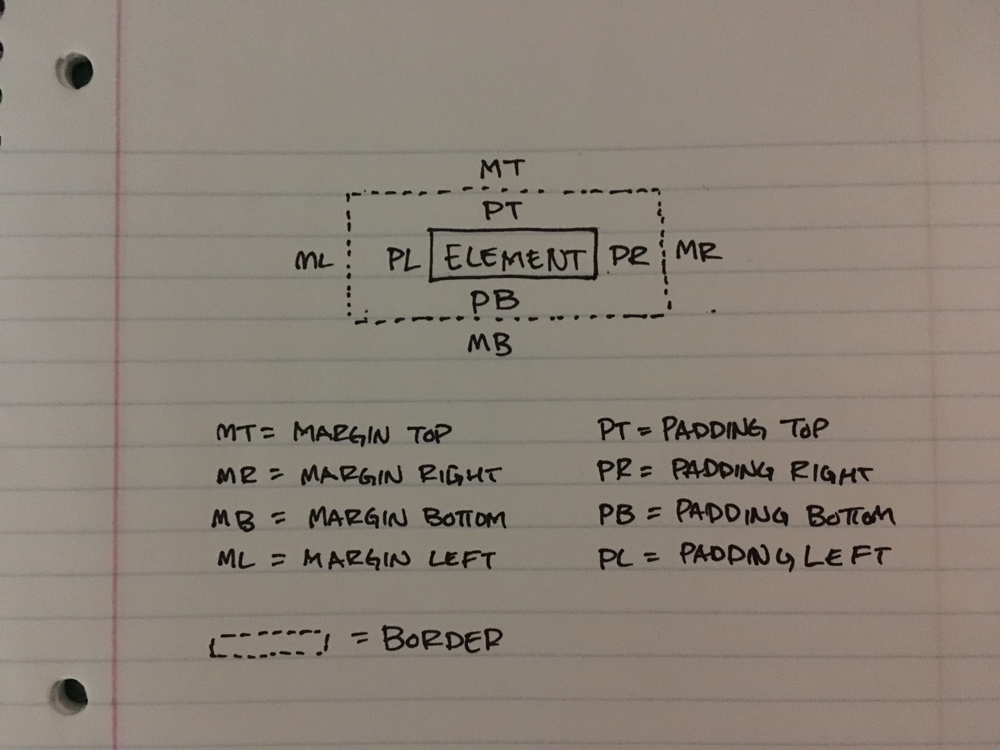

This is the third week of Dev Bootcamp and we focused on expanding our knowledge of CSS. To start off, CSS stands for Cascading Style Sheets and it describes how a page or document on the web should be displayed. It's usually a separate document that is linked to an HTML page in the
tag and via the tag. It wasn't a super difficult subject to learn, but I'd be joking if I said that positioning didn't frustate the life out of me. Let's just say there was a lot of type this, refresh, view, erase, type that, refresh, view, erase, and so on.The margin is the outermost space of an element. It's the blank space outside of the border and in-between elements.
The border is the line dividing the margin and the padding.
The padding is the inner most space right up against the element.
I found that when I was first learning about these that a visual had the most impact for making it "click". Another great resource is fellow Fiddler Crab Jonathan Silvestri's post here. He goes in-depth in a fun post to read. He explains the topic in a way I have a difficult time conveying. For real, just go give it a read.
